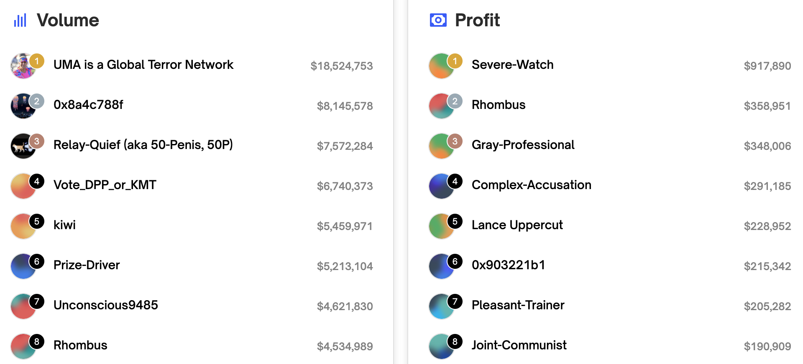
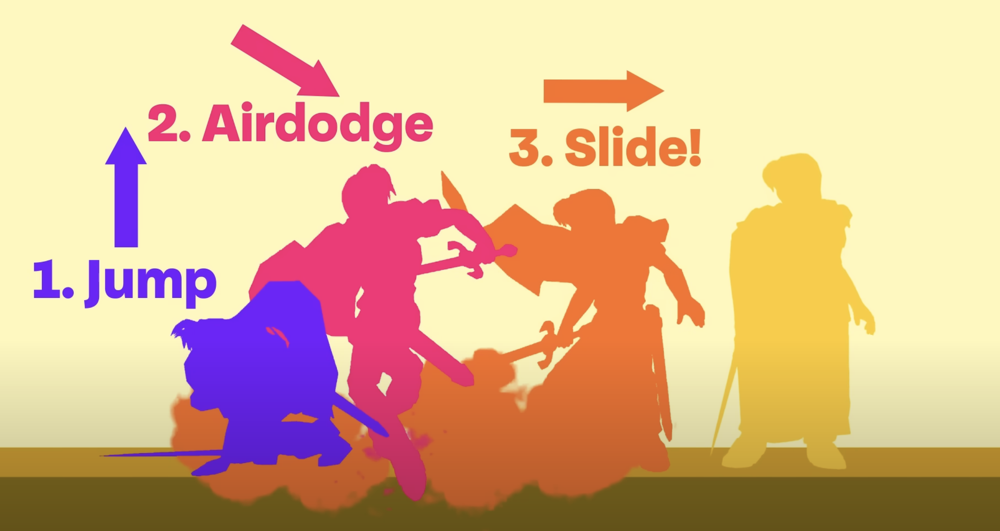
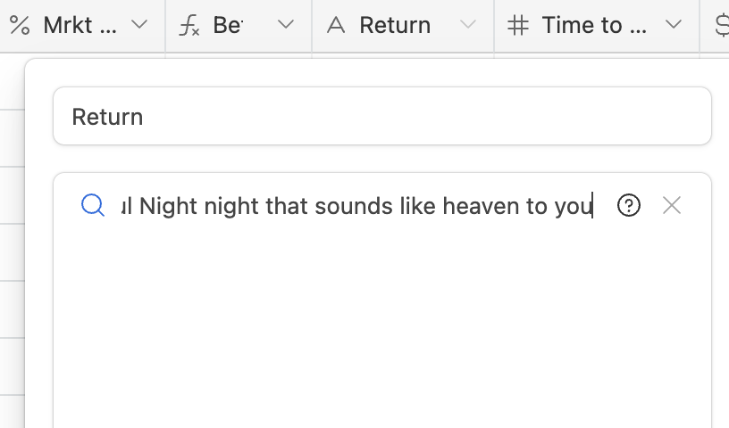

iconicNote · updated 2024-02-22Raiders of the Lost Ark{:height 386, :width 748} Tolkien Shruggedhttps://x.com/DylanoA4/status/1728911383113383964?s=20The Working Lunch theme songvideo: https://www.youtube.com/watch?v=g8vQKnceCVkMelee Moments https://neal.fun/internet-artifacts/first-mp3/my voice software when I'm watching the supranos 